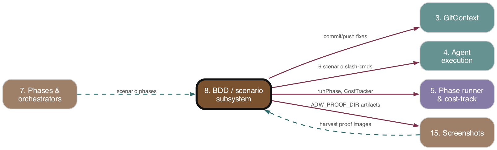

BDD / scenario subsystem
As-is reference. Ground truth: source code.

Purpose
Drives BDD-driven validation across the SDLC pipeline: generating per-issue Gherkin scenarios from a GitHub issue, generating step definitions, reconciling the implementation plan against scenarios, running tag-filtered scenario suites as subprocesses (per-issue + regression), looping resolve+retest on failure with goal-fidelity and Gherkin-freeze governance, publishing PR proof, enforcing stack coherence, and sweeping per-issue scenarios for promotion into the curated regression suite. The plan/scenario contract is the operative artifact: scenarios encode issue intent, the plan must align to them, and the build must make them pass.
Responsibilities
- Scenario authoring (
/scenario_writer) and step-def generation (/generate_step_definitions). - Plan↔scenario reconciliation: multi-round validation+resolution loop OR single-pass alignment (two coexisting implementations).
- Scenario execution by tag via project-configured runner; JUnit-report-based pass/fail derivation.
- Scenario test→fix loop with bounded retries, Gherkin freeze enforcement, post-resolve goal-fidelity re-check, and hard-fail verdicts.
- Gherkin freeze: snapshot/detect/revert any
.featureedits a resolve agent makes. - Proof markdown + artifact harvesting; PR proof publish.
- Stack-coherence detection (language/Gherkin-mandate mismatch) →
adw-unverifiedlabel. - Step-def presence detection across BDD frameworks; framework→extension mapping.
- Promotion sweep: score per-issue scenarios, tag
@promotion-suggested-<date>, comment, applyhitl; move human-approved@promotionscenarios intofeatures/regression/via a separate PR. - Vocabulary registry (rot-prevention rubric + canonical Gherkin phrase table).
Key Files
| Path | Role |
|---|---|
| --- | --- |
adws/phases/scenarioPhase.ts |
Runs /scenario_writer (non-fatal); gated on plan_validating stage |
| --- | --- |
adws/phases/stepDefPhase.ts |
Runs /generate_step_definitions (non-fatal) |
| --- | --- |
adws/phases/planValidationPhase.ts |
Multi-round validate→resolve→re-validate loop (MAX_VALIDATION_RETRY_ATTEMPTS); throws on exhaustion |
| --- | --- |
adws/phases/alignmentPhase.ts |
Single-pass alignment; never throws (warnings only); gated on plan_aligning |
| --- | --- |
adws/phases/scenarioTestPhase.ts |
Runs scenarios via runScenarioProof, optionally inside withDevServer; skips when no scenarios configured |
| --- | --- |
adws/phases/scenarioFixPhase.ts |
Resolves each failed tag, enforces Gherkin freeze, commits+pushes |
| --- | --- |
adws/phases/scenarioTestFixLoop.ts |
Bounded test↔fix loop; resolve-verdict; post-resolve fidelity; throws ScenarioHermeticityError/GoalFidelityError |
| --- | --- |
adws/phases/scenarioProof.ts |
Per-tag run orchestration; JUnit-driven outcome; writes scenario_proof.md |
| --- | --- |
adws/phases/gherkinFreeze.ts |
Snapshot/detect/restore .feature files (fs at edges) |
| --- | --- |
adws/phases/proofPublishPhase.ts |
Harvests artifacts, uploads, posts PR proof comment (non-fatal) |
| --- | --- |
adws/phases/stackCoherenceReporter.ts |
Runs coherence check → ADW_UNVERIFIED_LABEL + stack_incoherent comment |
| --- | --- |
adws/agents/scenarioAgent.ts |
/scenario_writer wrapper; filters ADW comments, extracts actionable content |
| --- | --- |
adws/agents/stepDefAgent.ts |
/generate_step_definitions wrapper; parses removedScenarios JSON |
| --- | --- |
adws/agents/validationAgent.ts |
/validate_plan_scenarios; findScenarioFiles (scans @adw-{N} tag) |
| --- | --- |
adws/agents/resolutionAgent.ts |
/resolve_plan_scenarios; emits ResolutionDecision[] |
| --- | --- |
adws/agents/alignmentAgent.ts |
/align_plan_scenarios; emits AlignmentResult (aligned/warnings/changes) |
| --- | --- |
adws/agents/scenarioFidelityAgent.ts |
/validate_scenario_fidelity; reuses ValidationResult rail (scenarios vs issue body) |
| --- | --- |
adws/agents/bddScenarioRunner.ts |
runScenariosByTag subprocess executor ({tag} substitution, env injection) |
| --- | --- |
adws/core/resolveFreezeGuard.ts |
evaluateResolveEdit — reject if any changed path ends .feature |
| --- | --- |
adws/core/resolveVerdict.ts |
computeResolveVerdict → pass/retry/hard-fail |
| --- | --- |
adws/core/testReportParser.ts |
JUnit XML → TestReport (bare <failure/>=skipped for pending/undefined) |
| --- | --- |
adws/core/testVerdict.ts |
computeTestVerdict → pass/hard-fail/warn (unit-test gate) |
| --- | --- |
adws/core/stepDefDetection.ts |
stepDefExtensionsFor, isGherkinFramework, hasStepDefinitions |
| --- | --- |
adws/core/stackCoherenceCheck.ts |
Language-token inference; language-mismatch/non-gherkin-bdd warnings |
| --- | --- |
adws/adwPromotionSweep.tsx |
CLI orchestrator: commenter + mover passes on per-issue PR events |
| --- | --- |
adws/promotion/ |
promotionScorer, promotionThreshold, promotionCommenter, promotionMover, vocabularyParser, scenarioParser, promotionTagWriter, promotionApprovalDetector, promotionStatsLoader |
| --- | --- |
features/per-issue/feature-*.feature |
Per-issue agent-input scenarios (@adw-{N}) |
| --- | --- |
features/regression/ |
Curated @regression suite: smoke/, surfaces/, multilang/, step_definitions/, vocabulary.md |
| --- | --- |
templates/vocabulary.md.template |
Vocabulary registry scaffold (rot rubric + phrase table) copied by adw_init |
Behavior & Flows
Pipeline placement (adwSdlc): plan ‖ scenario (parallel) → alignment → build → stepDef → unitTest → runScenarioTestFixLoop → review/patch loop (re-runs scenarioTestPhase) → document → PR → proofPublish. (planValidationPhase is the older multi-round alternative to alignmentPhase.)
Scenario authoring: scenarioAgent builds issue JSON (human comments only, latest actionable comment), invokes /scenario_writer with cwd=worktree. The command is polymorphic on .adw/scenarios.md (Per-Issue Scenario Directory, Regression Scenario Directory → skip auto-promotion sweep) and carries a Rot-Prevention block prohibiting file-existence/file-content-substring/structural-source assertions.
Alignment vs validation: alignmentPhase runs one /align_plan_scenarios pass, uses the issue as sole truth, flags unresolvable conflicts as plan warnings, commits if changes. planValidationPhase runs /validate_plan_scenarios; on misalignment loops /resolve_plan_scenarios→re-validate up to MAX_VALIDATION_RETRY_ATTEMPTS, throwing on exhaustion. Both skip when no plan or no @adw-{N} scenario files exist. Output-parse exhaustion (OutputValidationError) degrades to warn/aligned.
Scenario execution: runScenarioProof pre-flight-checks step-def presence (hasStepDefinitions with framework-derived extensions); if absent, writes a skip proof and returns no blockers. For each reviewProofConfig.tags entry, substitutes {issueNumber}, runs runScenariosByTag (env: ADW_JUNIT_REPORT_PATH, ADW_PROOF_DIR), reads the JUnit report, and derives outcome (deriveTagOutcome): report-present uses pass/fail counts (with a warning when exit code disagrees but report is clean); report-absent falls back to exit code; optional tags with zero scenarios are skipped. hasBlockerFailures = any non-skipped blocker-severity tag failed.
Test→fix loop: runScenarioTestFixLoop runs scenarioTestPhase; on first-pass green (no retries) returns immediately. On blocker failures it computes computeResolveVerdict(targetPass,regressionPass,budgetRemaining): retry→run scenarioFixPhase then retest; hard-fail→throw ScenarioHermeticityError. After a resolve makes scenarios green, it runs scenarioFidelityAgent (scenarios vs issue body); postResolveAligned===false→hard-fail→throw GoalFidelityError. @regression failure counts as not-green.
Gherkin freeze: scenarioFixPhase snapshots all .feature files before resolve; after, evaluateResolveEdit rejects if any .feature changed and restoreGherkinSnapshot reverts them (recorded as gherkinFreezeViolations).
Stack coherence: reportStackCoherence (run from unitTestPhase/issue-comments path) infers language tokens across testFramework/bddFramework/runTests/runScenariosByTag; >1 language → language-mismatch; non-Gherkin BDD → non-gherkin-bdd; warnings apply adw-unverified label + stack_incoherent comment.
Promotion sweep (separate CLI, per-issue PR events): finds the per-issue PR; commenter scores each changed per-issue scenario (score: surfaceMatch 3, subprocess 3 / phase-import 2 / mock-query 0, +1 per extra When-phase), compares to computeThreshold (auto-ramping BOOTSTRAP_THRESHOLD3..MAX_THRESHOLD7 by 90-day promoted/per-issue ratio, RATIO_CAP0.5); at-or-above-threshold scenarios get @promotion-suggested-<today> inserted (byte-preserving) and a single PR comment, and hitl label is applied. mover detects bare @promotion (human-approved) scenarios and opens a separate regression-promotion PR moving them into features/regression/.
Data Structures
ScenarioProofResult { tagResults:TagProofResult[]; hasBlockerFailures; resultsFilePath; artifactsDir }TagProofResult { tag; resolvedTag; severity:'blocker'|'tech-debt'; optional; passed; output; exitCode; skipped; warning?; counts?; cases? }BddScenarioResult { allPassed; stdout; stderr; exitCode }TestReport { total; passed; failed; skipped; cases:TestCaseResult[] };TestCaseResult { name; classname?; status; failureMessage? }ValidationResult { aligned; mismatches:MismatchItem[]; summary };MismatchItem { type:'plan_only'|'scenario_only'|'conflicting'; description; planReference?; scenarioReference? }ResolutionResult { resolved; decisions:ResolutionDecision[] };ResolutionDecision { mismatch; action:'updated_plan'|'updated_scenarios'|'updated_both'; reasoning }AlignmentResult { aligned; warnings; changes; summary }ResolveVerdictSignals/ResolveVerdictOutcome(pass/retry/hard-fail);TestVerdictInput/TestVerdictResult(pass/hard-fail/warn)StackCoherenceResult { ok; warnings:StackCoherenceWarning[] }(language-mismatch/non-gherkin-bdd)- Promotion:
ScoreResult,VocabularyRegistry,Scenario,PromotionStats,TagState,MovedScenarioResult - Snapshot:
Map<relPath,content>for.featurefiles
Public Interface
- Phases:
executeScenarioPhase,executeStepDefPhase,executePlanValidationPhase,executeAlignmentPhase,executeScenarioTestPhase,executeScenarioFixPhase,runScenarioTestFixLoop,executeProofPublishPhase,reportStackCoherence - Agents:
runScenarioAgent,runStepDefAgent,runValidationAgent,runResolutionAgent,runAlignmentAgent,runScenarioFidelityAgent,runScenariosByTag,findScenarioFiles,readScenarioContents - Pure cores:
computeResolveVerdict,computeTestVerdict,evaluateResolveEdit,parseJUnitXml/readJUnitReport,stackCoherenceCheck,stepDefExtensionsFor/isGherkinFramework/hasStepDefinitions,runScenarioProof/shouldRunScenarioProof,captureGherkinSnapshot/collectChangedFeaturePaths/restoreGherkinSnapshot - Freeze guards:
ScenarioHermeticityError,GoalFidelityError - Promotion:
runPromotionCommenter,runPromotionMover,score,computeThreshold,parseVocabulary,parseScenarios,loadPromotionStats,detectApprovals
Dependencies
- Upstream (depends on):
- Agent execution 04. Agent execution">(#4) —
runCommandAgent/CommandAgentConfig/OutputValidationError; cost/model usage. - Phase runner & cost-tracking composition 05. Phase runner & cost-tracking composition">(#5) —
runPhase/runPhasesParallel/CostTracker,createPhaseCostRecords. - State & ADW ID 02. State & ADW ID">(#2) —
AgentStateManager,shouldExecuteStage. - Config & Environment 01. Config & Environment">(#1) —
projectConfig.scenarios/commands/reviewProofConfig/scenariosMd,MAX_*_RETRY_ATTEMPTS,withDevServer. - GitContext 03. GitContext">(#3) —
gitContextFor,pushBranch, worktree ops (fix + mover). - Downstream (depended on by):
- Phases & orchestrators 07. Phases & orchestrators">(#7) — all 6 orchestrators wire these phases.
- Auto-merge / HITL + resilience queues 11. Auto-merge / HITL + resilience queues">(#11) —
hitllabel gates auto-merge.
Interactions
| Other subsystem | Direction | What is exchanged |
|---|---|---|
| --- | --- | --- |
| Agent execution 04. Agent execution">(#4) | calls | /scenario_writer, /generate_step_definitions, /validate_plan_scenarios, /resolve_plan_scenarios, /align_plan_scenarios, /validate_scenario_fidelity via runCommandAgent |
| --- | --- | --- |
| Phases & orchestrators 07. Phases & orchestrators">(#7) | called by | scenario/stepDef/alignment/validation/test/fix/proof phases composed into SDLC pipeline |
| --- | --- | --- |
| Phase runner & cost 05. Phase runner & cost-tracking composition">(#5) | provides/consumes | runPhase/CostTracker; emits PhaseCostRecord[] |
| --- | --- | --- |
| State & ADW ID 02. State & ADW ID">(#2) | reads/writes | per-agent state dirs, stage-gate (plan_validating/plan_aligning), orchestrator log |
| --- | --- | --- |
| Config & Environment 01. Config & Environment">(#1) | reads | .adw/scenarios.md/commands.md config; dev-server wrap |
| --- | --- | --- |
| GitContext 03. GitContext">(#3) | calls | commit/push fixes; worktree+PR for promotion mover |
| --- | --- | --- |
| Cost telemetry & D1 13. Cost telemetry & D1">(#13) | feeds | JUnit/proof artifacts and phase cost records |
| --- | --- | --- |
| Auto-merge / HITL 11. Auto-merge / HITL + resilience queues">(#11) | signals | hitl label (promotion), adw-unverified label (stack-incoherent), blocker verdicts halt pipeline |
| --- | --- | --- |
| Screenshots 15. Screenshots">(#15) | produces | ADW_PROOF_DIR artifacts harvested by proofPublishPhase |
| --- | --- | --- |
| Triggers 10. Triggers">(#10) | invoked by | adwPromotionSweep.tsx on per-issue PR events (external trigger) |
| --- | --- | --- |
| Docs/issue comments | posts | stage comments (plan_aligning/plan_validated/stack_incoherent/...) |
CLAUDE-CODE TOUCHPOINTS
Slash commands (all via runCommandAgent, cwd=worktree): /scenario_writer, /generate_step_definitions, /validate_plan_scenarios, /resolve_plan_scenarios, /align_plan_scenarios, /validate_scenario_fidelity. Scenario/regression execution is subprocess-only (runScenariosByTag via cucumber-js etc.) — no agent cost. The implement-tdd skill (build phase) consumes @adw-{N} .feature files as RED tests.
PRD Divergences
- tdd-bdd-integration.md — partially implemented.
alignmentPhase(single-pass) exists, but the olderplanValidationPhasemulti-round loop is still present and wired in some orchestrators; both coexist.stepDefPhasewas NOT dropped (PRD called to "drop the separate step definition generation phase entirely" since the build agent would generate step defs in its TDD loop) —executeStepDefPhasestill runs in adwSdlc after build. Post-resolve fidelity check (scenarioFidelityAgent) and Gherkin freeze are implemented as additional governance. - scenario-rot-prevention-and-promotion.md — fully implemented. Rot-prevention block in
scenario_writer.md, scored promotion (promotionScorer), auto-ramping threshold (computeThreshold),@promotion-suggested-<date>tag + PR comment +hitlgate, human@promotionedit → mover PR intofeatures/regression/. Vocabulary registry template present;vocabulary.md.template"Observability Surfaces" section is still a TODO stub (slice #3 unfilled). - bdd-rewrite-tiered-regression.md — fully implemented.
features/regression/vsfeatures/per-issue/folder split, fixed-vocabulary DSL, hybrid execution model (smoke/+surfaces/). 14-day cron retirement sweep is referenced as external cron, not in this subsystem's source. - bdd-rewrite-surface-matrix.md — fully implemented as authored scenarios under
features/regression/surfaces/(row-NN-*.feature). - multi-language-test-and-bdd-support.md — partially implemented. Framework→extension map (
stepDefDetection), Gherkin-mandate + language-coherence checks (stackCoherenceCheck), JUnit-report-based verdicts (replacing stdout-regex),testVerdictzero-testcase discovery-break guard, andADW_PROOF_DIRartifact harvesting are all present.features/regression/multilang/python_fixture_e2e.featureexercises a Python path. The durable unit-test gate moving out ofproject.mdis not visible in this subsystem (lives in config #1).